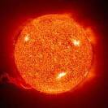
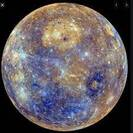
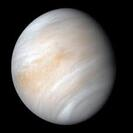
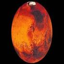
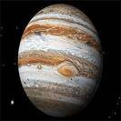
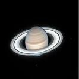
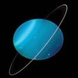
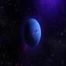
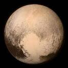
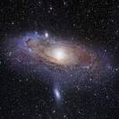

태양
: 태양계 중심에 있으며 지구에서 가장 가까운 항성이다.

수성
: 태양에서 가장 가까운 궤도를 도는 행성이다.

금성
: 태양계의 두 번째 행성이다. 샛별, 새별로 불리기도 했다.
지구
: 태양으로부터 세 번째 행성이며, 얇은 대기층으로 둘러싸여 있다.

화성
: 태양계의 4 번째 행성이며, 붉은색을 띈다.

목성
: 태양계의 다섯번째 행성이자 가장 큰 행성이다.

토성
: 목성과 모든 면에서 아주 비슷하지만 아름다운 고리가 있다.

천왕성
: 맨눈으로 볼 수 있음에도 불구하고 하늘에서 매우 느리게 움직이는데다 매우 어둡다.

해왕성
: 해왕(海王)은 ‘바다의 왕’이라는 한자어로, 포세이돈(그리스 신화명) 또는 넵투누스(로마 신화명)를 번역한 것이다.

명왕성
: 현재 왜행성으로 분류되어 134340이라는 식별 번호가 붙어있다.

우리은하
: 태양계가 속해 있는 은하이다. 우리가 속해 있는 곳이기 때문에 단순히 "은하" 또는 "은하계"라고도 불린다.
말머리성운
: 오리온자리의 암흑 성운이다. 하늘에서 가장 알아보기 쉬운 성운 중 하나이다.